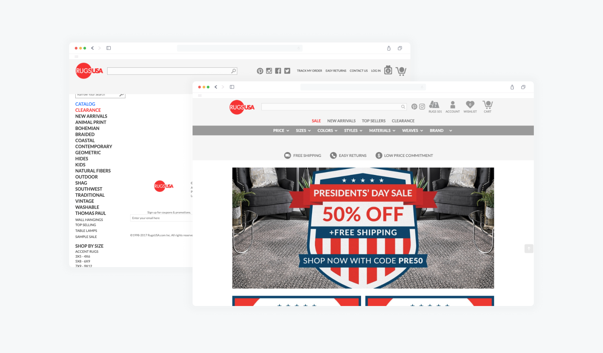

Overview
What is Rugs USA?
Rugs USA is an ecommerce shop primarily focused on selling high quality rugs at the best prices. Rugs USA provides a wide range and variety of sizes, designs, and weaves made for any customer.
Roles
My role was primarily as a front end web developer and ux designer. I was part of both the development and design team. I also worked very closely with the analytics team to get a full understanding of what needs change based on user activity.
{kind=link}
Users
Rugs USA caters to economical customers who want a great quality rug without having to break their wallets. It was crucial to keep in mind that there were experienced buyers and buyers who have never purchased a single rug before.
Goals
Issue: Cart Abandonment
A huge issue that the analytics team brought to attention was the amount of carts abandoned. Customers would leave the website or cancel purchasing a rug because they were unsure of many components - how the rugs would look, fit, or how difficult it would be to keep clean.
My main goal was to provide the answers to all asked questions and prevent buyer’s regret, thus providing confidence to rug buyers.
Order of Goals
I realized it wasn’t a simple issue of providing more information. A user needs to feel confident from start to finish. Hence, I laid out some goals that needed to be fulfilled to create that confident buying experience.
- Rugs Catalog: When a user first looks for a rug, they are presented a list of rugs with a huge selection of filters. This is where the user views the selection of rugs that Rugs USA provides.
- Rug Selected Page: After a user selects a rug from the catalog, they are sent to the rug selected information page. This page provides general information of the selected rug.
- Rugs 101: Having identified cart abandonment as a huge issue, knowing the reasoning behind the occurrence was a good first step. An all-in-one glossary for all purchase questions and concerns would provide confidence to every buyer.
Old Design
{kind=link}
Rugs Catalog
Window Shopping
Rugs USA’s catalog page features a wide preview of rugs with filters to narrow down searches. Each rug has its own subset of information to give a general idea on the different variations and properties.
After consulting with the analytics team, we concluded that there were two main issues.
{kind=link}
The first issue was the obscene amount of filters with no structure. There’s no issue with there being a huge selection of filters, but it becomes a hindrance when there is no organization between categories.
The second issue was the lack of useful information within each rug preview card. Crucial information was missing and users were annoyed at having to click on a product to view said information.
Rugs Catalog Pt.1 - Filter
After identifying the lack of structure, I first categorized each option based on relatability. This created an organized overview for users to find what they’re looking for with ease.
Since the rug preview cards were the main content of this page, I moved the most popular filters to the top. This provided a wider range of viewable cards per row - lessening the amount of scrolling.
{kind=link}
The rest of the filters could be found with a button revealing all the possible filters.
{kind=link}
Rugs Catalog Pt.2 - Preview
Initially, the rug preview cards showed 3 pieces of information - color variations, rug name, and a sale banner. In the age of online shopping, this was nowhere near information. After reviewing what customers requested and viewing successful shopping experiences, I decided on adding 3 more crucial pieces of information - ratings and number of reviews, shipping details, and the actual amount calculated with the current sale.
{kind=link}
- Ratings and number of reviews are essential in a preview because it is a quick view of what other customers experienced with the possible product.
- In a society where fast shipment can make or break sales, showing how fast a product is shipped gives customers more incentives to purchase a product.
- Showing the sales price provides a transparent and upfront view of what the customer will receive without the possibility of disappointment when they click a product.
Result

Rug Full View
Found an eye-catching rug?
When a customer views a potential rug, they are presented with the rug full view page. This is where the specificities of each rug is presented.
The issue of the initial rug full view page was it provided similar information to the rug preview cards; it was too general and didn’t show specificity. Another issue was the lack of useful features to keep customers engaged. There was no personalized information or interactive and engaging features.
What I did
The first issue I tackled was the lack of specified information. For the main information that Rugs USA provides, I included a sale timer, every color of the rug, each shape that the rug comes in, every sizing, prices and sales prices for all variations, and shipment estimation.

For the lack of interaction and personalized shopping experience, I provided a “You might also like” and “Your recently viewed” to provide a quick way to access recommendations and previously interested items.
{kind=link}
Since reviews and other customer experiences are so crucial when purchasing products, I included a section to view full customer reviews, questions and answers, and customer-uploaded photos. This gave customers third-party feedback about the potential product while also providing inspiration and ideas.
Result

Rugs 101
The Ultimate All-In-One
This is where I began to really tackle the main issue of cart abandonment - the uncertainties that new and existing customers had when shopping for a rug. I began a solo project called Rugs 101.
What is Rugs 101?
Rugs 101 is an all-in-one buyer’s guide for new and existing customers who have questions or are unsure about their purchase. Rugs 101 would feature information regarding:
- Rug Sizing
- Weaves and Materials
- Washing instructions
- Room Dimension Fitting (How it would look in their room)
These were the main questions and concerns users have given through feedback. Although we did provide general information on the rug full view page, this went into detail on all the possible specifics the users may have.
Also included was a glossary for terms that customers may not be familiar with. This broadened their knowledge for future rug purchases.
Result

Each section goes over in full detail of their respective topics, including images and graphics that help visualize each topic. I made sure to keep it scalable for the future, just in case other guides are needed.
Conclusion
A confident customer is a happy one
Knowing the needs of the customers is a huge part of confident purchases. It’s stressful for customers when they purchase an item that may or may not meet their expectations. Providing as much detail from different sources of information blocks can dissolve some of that uncertainty. A confident buyer results in more frequent purchases for the present and the future.
After reviewing analytics, we received a lot of activity and views on our Rugs 101 guide in conjunction with rug purchases, decreasing overall cart abandonment by 24%. This shows that even a bit of guidance can generate confidence in any customer.
Back to top
Want to get in contact?
Feel free to send me a message for any questions or inquiries through my email at seo.kenny94@gmail.com.
Designed and developed by Kenny.